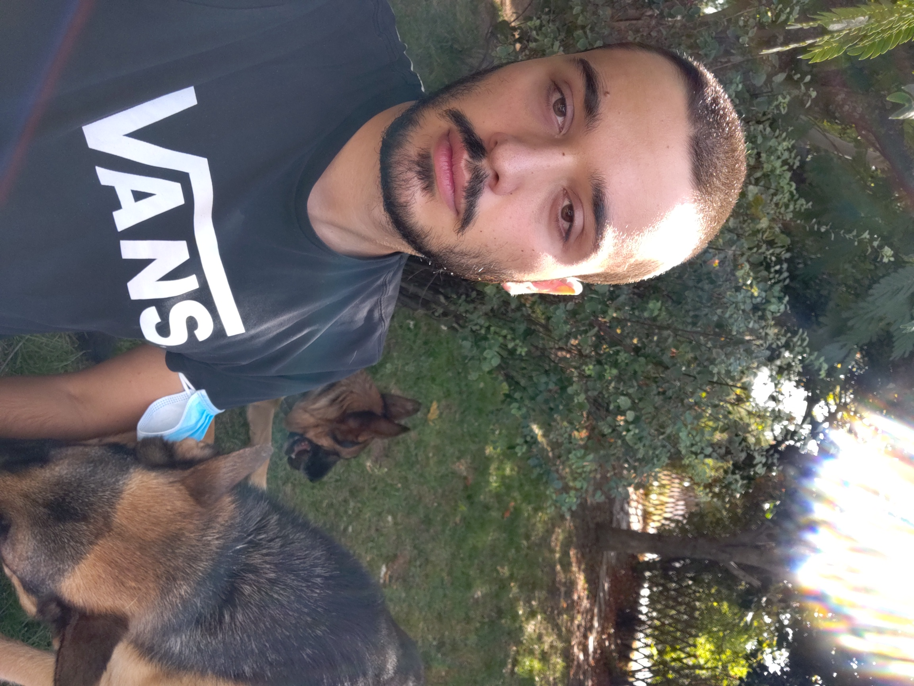

Georgios Giounis
Cybersecurity and Networks student
Athens, Greece || contact: g.giounis@acg.edu || github: https://github.com/Giounis
My name is Giorgos Giounis, I am a Greek Cybersecurity and Networks student at ACG, Deree College in Agia Paraskevi. I was born in 1999.
An Unordered List:
- One Item
- Another Item
- Yet Another Item
My career goals right now:
- Graduate from ACG college
- Get CCNA cisco and Comptia Linux+ certifications
- Begin my own educational project